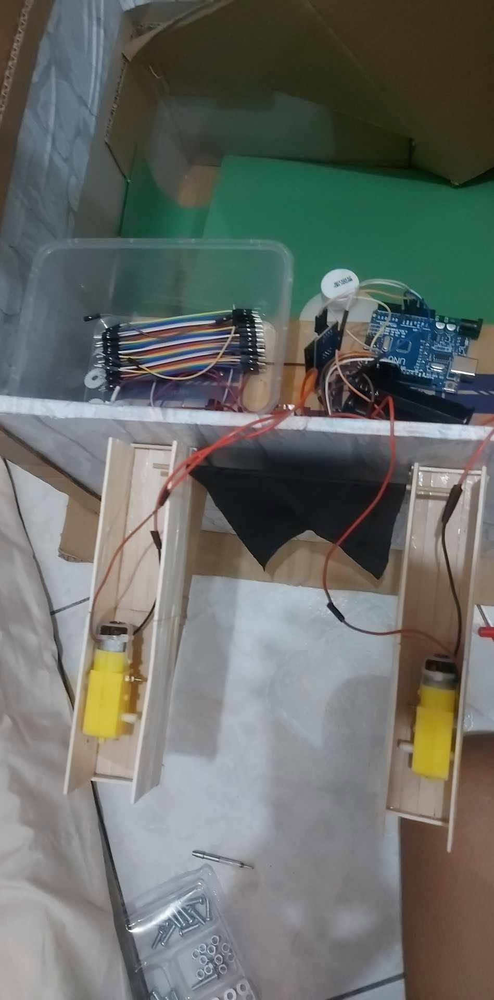
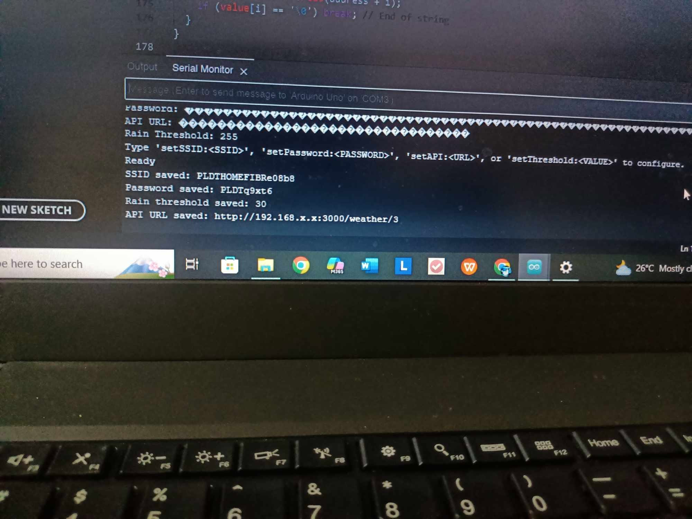
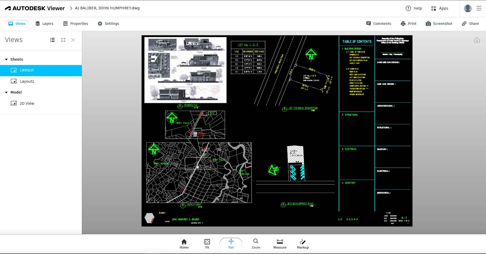
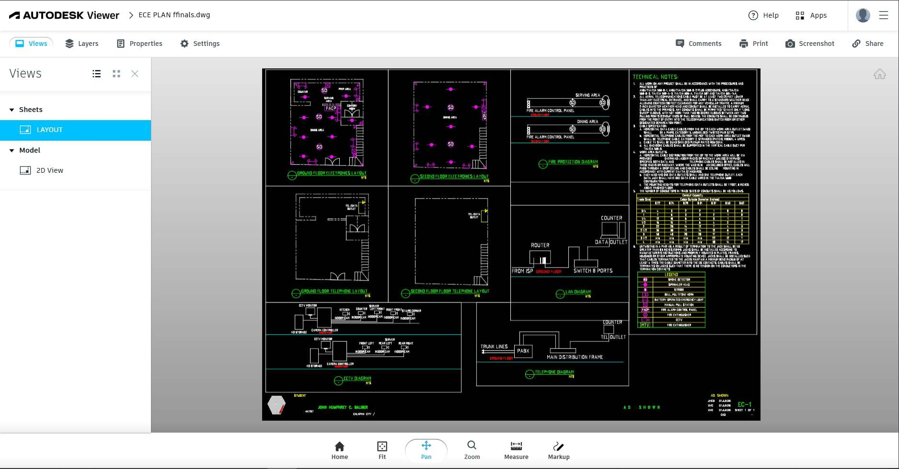

images/profile.jpg
John Humphrey C. Baliber is a first-year Information Technology student at Mindoro State University, Calapan City Campus. Growing up surrounded by microelectronic components and digital devices, he has always been fascinated by technology and driven by curiosity about how things work.
Now a BSIT student, he is exploring the digital side of technology, the world behind every component he has handled. Humphrey hopes that one day the knowledge and experience he has gained will help him create something revolutionary for everyday people.
images/profile.jpg
Born into a small, simple and humble family, he made his way through life with the power of knowledge. He aspires to keep learning more and more, using what he has learned to guide his decisions. As life goes on, he strives to move forward and to make his way of life a fulfilling one.
Birthday
June 14, 2007Age
19Blood Type
B+Hobbies
Cubing, Model Kits, Arcade Racing, GamingKindergarten
Little Angels of Mary Immaculate Children’s House– Academic Excellence AwardElementary
Divine Word College of Calapan– Academic Excellence AwardJunior High School
Divine Word College of Calapan– Academic Excellence AwardSenior High School
Oriental Mindoro National High School– Academic Excellence Award

AuCloRo: Automated Clothesline Roof
For their senior high school capstone, his group built “AuCloRo: Automated Clothesline Roof.” The device is bolted onto a wall and works as an extending clothesline that automatically retracts and deploys a flexible waterproof cover when a weather API forecast simulates a 90% chance of rain in 5 minutes.
The design accounted for the maximum weight of the clothes, the weight placed on the waterproof cover by the amount of rain, and the overall strength of the device against wind. Tested with a mock API, the system achieved a 90% success rate and a 100% deployment rate.


Computer-Aided Design (CAD)
He has also developed foundational proficiency in Computer-Aided Design (CAD), becoming familiar with its interface, tools, and essential functions. He learned to create custom shapes, symbols, and sigils using various drafting techniques.
He also applied these skills to develop a site plan illustrating a land’s location and layout, and created an architectural floor plan representing a building’s actual structure and spatial arrangement. These activities strengthened his technical drafting skills, precision, and understanding of digital design.
images/profile.jpg
I hope that by reading through this, I have showcased my capabilities and demonstrated the work I have done. I look forward to being in contact and working together with you.
- Email: johnhumphreyb@gmail.com
- Contact number: 09508166798
- Facebook: facebook.com/crzt.humz/
- Address: Sitio Amuguis, Barcenaga, Naujan, Oriental Mindoro, Philippines, 5204